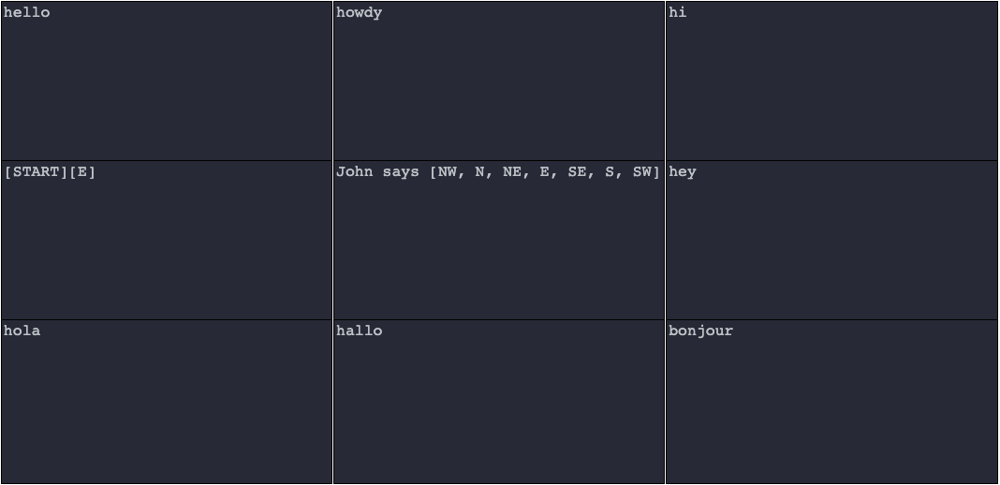
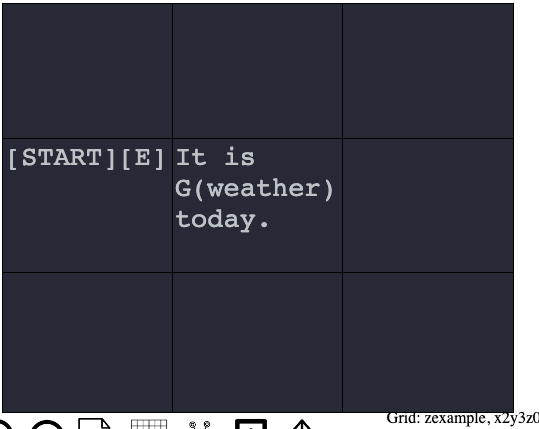
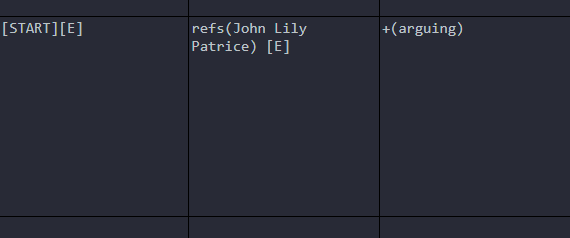
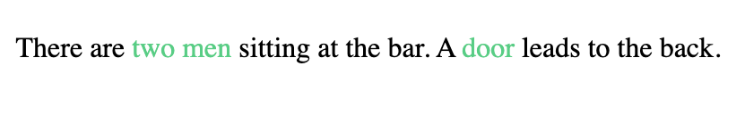

ProcGenie is an open source browser based procedural text generation tool. ProcGenie enables the design of complex replacement grammars for procedural text generation. ProcGenie allows probabilistic and constraint-based rule selection, state tracking, and deeply nested graphs and rules. ProcGenie also facilitates interactivity by allowing users to steer procedural text generation through dynamically generated choices, hyperlinks, and a parser.
This User's Guide includes two cheat sheets and an extensive guide to the underlying systems of ProcGenie. The first cheat sheet discusses some of the key elements of the conceptual framework behind ProcGenie. The second cheat sheet discusses the nuts and bolts syntax of defining a grammar on ProcGenie graphs. The more in-depth discussion that follows explains these concepts and syntax in more detail with examples.
ProcGenie is in beta, this guide is a work in progress, and both the project and the guide will be updated over time.
Rewrite System |
An algorithm applying rewrite rules |
Grammar |
A rewrite system used to define a language |
Language |
The universe of potential generative results of a grammar |
Start Symbol |
A start symbol describes the starting element of a grammar |
Nonterminal |
A symbol that can be expanded by production rules to a string |
Terminal |
A terminal string with no more expansion allowed |
Production Rules |
Rules specifying the expansion of nonterminals to other nonterminals or terminals |
Graph |
A graph is a named nonterminal |
Cell |
Each cell on the graph is an anonymous nonterminal |
Component |
Each cell is made up of components. A component is an anonymous nonterminal or terminal |
Directional Rules |
Directional Rules are production rules specifying which way the generator can move on the graph |
Walker |
The "Walker" is a conceptul framework we use to describe the current coordinates and state of the generator on the graph during a generation run |
Escape |
After clicking the "Run" button, press the escape key to leave your generated text and return to your graph editor. |
[START] |
Defines a start symbol or entry point on a graph |
[E] |
Production rule specifying that next cell can be x + 1 on graph |
[W] |
Production rule specifying that next cell can be x - 1 on graph |
[N] |
Production rule specifying that next cell can be y + 1 on graph |
[S] |
Production rule specifying that next cell can be y - 1 on graph |
[NE] |
Production rule specifying that next cell can be x + 1 and y + 1 on graph |
[NW] |
Production rule specifying that next cell can be x - 1 and y + 1 on graph |
[SW] |
Production rule specifying that next cell can be x - 1 and y - 1 on graph |
[SE] |
Production rule specifying that next cell can be x + 1 and y - 1 on graph |
[U] |
Production rule specifying that next cell can be z + 1 on graph |
[D] |
Production rule specifying that next cell can be z - 1 on graph |
[E, SE, W] |
Define multiple production rules by separating by commas |
| |
Separate components with a pipe (or) |
[10] |
Define probability factors on each component by placing the factor within brackets. If no probability factor is defined, the components are processed as an if/else statement |
G(graphName) |
Call another graph by name as a named nonterminal |
G(graphName, number) |
Repeatedly call another graph by name as a named nonterminal specified number of times |
teleport(graphName, x, y, z) |
Immediately moves to the specified graph and coordinates |
refs(r1 r2 r3) |
Set reference objects to one or more reference objects named in parentheses and separated by spaces |
getRefsByName(r1 r2 r3) |
Sets reference objects to listed reference objects |
listRefs() |
Provides a list of reference objects; where appropriate, separates list with commas and the word "and" |
allRefs(tag1 tag2 tag3) |
Sets reference objects to all reference objects that have the listed tags |
notRefs(tag1 tag2 tag3) |
Sets reference objects to all reference objects that do not have the listed tags |
anyRef(tag1 tag2 tag3) |
Sets reference objects to any reference objects that have any of the listed tags |
randRef(tag1 tag2 tag3) |
Sets reference object to a random reference object that has the listed tags |
+(tagName) |
Adds a tag or tags to current reference objects |
-(tagName) |
Removes a tag or tags from current reference objects |
?(tagName) |
Constraint checking whether a tag or tags exist on current reference objects |
[varName = varValue] |
Sets a variable to a value |
[varName += varValue] |
Adds a value to an existing variable. If the existing variable is a number, performs math. If the existing variable is a string, concatenates. |
[varName -= varValue] |
Subtracts a value from an existing variable |
[varName includes varValue] |
Checks whether the value of an existing variable includes a string |
[varName === varValue] |
Checks whether an existing variable is equal to a value |
[choice: text (variables) (directions)] |
Defines a choice that encodes context and generates from that context. |
[link: (variables) (directions)] |
Defines a link that encodes context and generates from that context. |
parse(direction) |
Adds a parser to current generation run. Pressing submit after text entry begins a new generation run from the cell in which the parser is defined and heading in the direction specified in parentheses |
ProcGenie is a procedural text generation tool for defining rewrite systems or grammars on a graph or set of graphs and procedurally generating textual results. A rewrite system is an algorithm that applies rewrite rules. A grammar is a rewrite system used to define a language. This usage of grammar is synonymous with the phrase replacement grammar. If you are familiar with Kate Compton’s work on Tracery, ProcGenie is based on the same theoretical framework. Unlike Tracery and other similar tools, the rewrite systems and grammars in ProcGenie are authored on graphs and encoded with context, state, probability, flow control, and interactivity.
A grammar consists of four basic elements: a start symbol (S), a nonterminals alphabet of symbols that will be replaced with terminal strings (generally denoted with capital letters like A or B), a terminal alphabet of strings that will be produced (generally denoted with lower case letters like a or b), and production rules for rewriting and expansion of the symbols.
An example grammar is described below.
S -> AB
A -> a
B -> CDE
C -> bc
D -> def
E -> a|b
In this example of a grammar:
Starting at the start symbol (S), the rules specify that S expands to the non-terminals A and B; A expands to the terminal a; B expands to the non-terminals C, D, and E; C expands to the terminals b and c; D expands to the terminals d, e, and f; and the nonterminal D expands to either the terminal a or the terminal b (denoted by the separation of the symbols with |, which is also used in ProcGenie as or). The example is a context-free grammar because the symbol expansion rules are the same regardless of the context. In other words, there are no production rules for context-sensitive expansion (e.g., separate rules for the expansion of AB when the symbols are adjacent or separate).
ProcGenie aims to reduce the burden of complex procedural text generation. We use the word “complex” as shorthand to describe the procedural generation of hand-authored, long-form, internally consistent, meaningful, and potentially interactive text. We generally distinguish complex generation from other forms of procedural text generation not by the sophistication of underlying methods but by the complexity of the ultimate goal. This working definition of this problem space defines the issue that ProcGenie seeks to address.
Complex procedural text generation is difficult to implement, time consuming to author, complicated both in reasoning and execution, and often frustrating in development. Implementation can require specialized knowledge or use of existing complex tools. The time necessary for an author to write the underlying procedures for complex procedural text generation is a significant burden. Reasoning about complex procedural text generation and executing complex procedural text generation require significant practice and specialized experience. Even with that practice and experience, the potential for inconsistent generation, untraceable bugs, and unsatisfying results is high. Creatives may not feel comfortable with the level of technical interface necessary to work on complex procedural text generation. Therefore, if a use case does not require complex procedural text generation, it may be best to look to other tools.
ProcGenie attempts to address this complex procedural text generation problem space in several ways.
Taken together, we posit that these features are a modest step forward in tooling for complex procedural text generation.
To begin working with ProcGenie, navigate to procgenie.github.io. When you arrive at the site, click on the "project" link, and you will see the following screen. The blank graph in the middle of the screen is the editor where you will write your grammars.
Each graph has x-, y-, and z- axes. To navigate on the x- or y- axes, either click on a cell or use the numpad on your keyboard. To navigate on the Z-axis, click the up or down button at the bottom of the screen.
The name of your current graph and your current editing coordinates are displayed in the bottom right of the screen.
The left sidebar contains a list of graph types. When you first start the program, the only existing type is the "default" type. As you create additional graphs and associate those graphs with types, you will see additional listings in this sidebar.
At the top of the screen, you will see four menu options. Clicking on the "File" menu option brings up five options: "New", "Local Save", "Local Load", "Export Graph", and "Home Page". The "New" option allows you to erase your current generator and create a new generator. The "Local Save" option allows you to save a copy of your current generator to local storage. The "Local Load" option allows you to load a copy of your current generator from local storage. The "Export Graph" option converts the currently selected graph to JSON and displays the results. The "Home Page" option takes you back to the project's landing page.
Clicking on the "Graphs" menu options brings up three options: "Create Graph", "Change Theme", and "Help". The "Create Graph" option brings up the graph editor. The "Change Theme" option allows a user to define themes that can be applied dynamically by name during generation.
Clicking on the "Prefab" option allows you to load prefabricated graphs. We wll touch more on that subject later.
Finally, clicking on the "Run" option runs the generator from the currently selected graph. When you are finished viewing your generated text, press the escape key to return to the graph editor.
A START symbol is the entry point for any graph grammar in ProcGenie. Define a START symbol by placing the word START between two brackets. For example, the graph below defines a single START symbol in the middle cell.
You can define any arbitrary number of [START] symbols on a single graph. After applying constraints, which will be discussed later, the generator chooses randomly among the START symbols as the starting place for generation on a graph.
For example, in the image below, the graph provides five [START] symbols or entry points to the graph, which correspond to potentially generated vowels. Because no constraints have been defined, the non-terminal graph named vowel, when called, will choose randomly between any of the five [START] symbols and result in the generation of a, e, i, o, or u.
After defining start symbols, where does the generator go next, and how is that decision made? To explain, we introduce the idea of a "Walker" as a conceptual framework for understanding the ProcGenie generation process.
We derive the term "Walker" from the context of dungeon crawlers and believe that a dungeon crawler serves as a useful analogy for the ProcGenie procedural text generation process. In a dungeon crawler, an avatar traverses a dungeon--picking up items, deciding between branching hallways, and encountering locked doors.
Similarly, in the case of ProcGenie, each time the Walker (i.e., the generator) moves to a new cell on the graph, it processes the text of a component on that cell before determining whether production rules, probabilities, and constraints allow it to move to the next cell. Processing that text may include, among other things, checking constraints, choosing between several available components defined in a single cell, running any defined processes on a selected component, dropping out of the selected graph into a different called graph before returning to the selected graph after completion, adding the text to the running buffer of generated text, adding hyperlinks or choices, and changing the world model or state.
Rules provide direction on possible generation spaces and serve like corridor branches in a dungeon crawler. At a branch, the generator could go left or right. If it goes left, it will arrive at one result. If it goes right, it will arrive at another result. Certain locks and keys (e.g., tags, variables, etc.) may allow or block movement.
After processing the text in a single cell, the Walker will determine whether any additional rules have been defined allowing it to move to another cell. The next cell could be an adjacent cell, a cell on a different graph, or a cell defined by its coordinates (by a process we fancifully call teleportation). If it can keep moving, the walker moves on to another cell to accumulate more text. If it is unable to keep moving, the Walker stops and that generation run is over.
With this conceptual framework in mind, we will use the word “Walker” throughout the remainder of this user's guide to refer to the current traversing state and location of the ProcGenie generator on a graph.
The path of the Walker across the graph is defined in simplest form by the directional rules N, S, E, W, NW, NE, SE, SW, U, and D corresponding to the cardinal directions for movement on the x-axis and y-axis of the graph and movement up (U) or down (D) on a z-axis. The syntax for these directional rules is to place the directional rule or rules within brackets. For example, Figures 3 and 9 show directional rules allowing the Walker to move [E] or to x + 1 on the graph. Figure 8 shows a directional rule allowing the Walker to move [S] or to y - 1 on the graph.
In the examples we have seen so far, the Walker is given a directional rule with a single direction. You can create multiple directional rules at once and increase combinatorial space simply by placing several directions within a single set of brackets separated by commas.
In the example below, directional rules state that the Walker can move in several different cardinal directions. Without further constraints, the Walker will choose randomly between the rules and move to the next production cell yielding hello, hola, hallo, bonjour, hi, howdy, or hey depending on the selected path. This is the equivalent of S -> aB; B -> a|b|c|d|e|f|g.
As discussed above, in addition to moving on the x or y axis of the graph, the Walker can move on the z-axis. The two directional rules allowing movement on the z-axis are [D] and [U] corresponding to z - 1 and z + 1. In the example below, the [U] directional rule instructs the Walker that it can move z + 1 from the middle cell in this example.
As you will recall, the up and down menu buttons at the bottom of the screen allow you to move between z-levels in the editor.
Using the conceptual framework of grammars, each cell on the graph is an anonymous non-terminal. In simpler terms, the cell is simply an anonymous symbol with rules identifying how it can be expanded into a string or text. Directional rules, which are described above, are production rules connecting the cell to other anonymous non-terminals (i.e., other cells).
Each authored cell consists of one or more cell components. In conceptual terms, the inclusion of a component in a cell defines a production rule stating that the anonymous non-terminal cell yields one of the authored components.
A single cell component is defined by writing any text in a cell. In the example below, the entry of text within a cell creates a single component.
You can create any number of components in a single cell by separating text with a pipe symbol (|). Each textual entry separated by the pipe becomes a separate component. In the example below, three components are created by writing three text entries separated by a pipe. Conceptually, the cell is an anonymous non-terminal, and each component in this example is a terminal. That is not always the case. As discussed in more detail below, components can include named non-terminals.
By default, the ProcGenie Walker will choose the first available defined component unless probabilities are defined for components or constraints (discussed later) prevent it from doing so. Define a component probability simply by placing a number in brackets at the end of the component before any directional rules. In the example below, red has a probability factor of 1, blue has a probability factor of 5, and green has a probability factor of 10.
If the Walker moves to the middle cell in the example above it will add all of the probability factors together, place each factor within a range, pseudo-randomly pick a number between 1 and the sum of the factors, and select the component with the probability factor range where that number lies. For example, picking 1 would result in a production of “red”, picking 2-6 would result in a production of “blue”, and picking 7-16 would result in a production of “green”.
We pause for a moment to address an issue that may seem intuitive to some. When the Walker chooses among components based on probabilities or chooses among directions, it inevitably will lead to paths not taken: components not selected or cells not visited. Unless, by some other direction, the Walker is directed to circle back to an unvisited cell or component, the related text is not incorporated in the text generation artifact. In other words, the extent of the Walker’s text generation is limited to those graphs, cells, and components that are selected and visited by the walker on a generation pass.
As discussed above, a graph is a named non-terminal. The syntax for calling a named non-terminal graph is a capital G followed by an opening parentheses, the name of the graph, and a closing parentheses. For example, G(color) expands the color graph where it is called. The examples in the images below show two graphs and an output. A portion of a component in the first graph is expanded by calling the other graph with G(weather). The named non-terminal weather then expands to the output terminal of “snowing”.
The first image above shows a graph with two cells defining a [START] cell and a cell with a single component. That component calls another graph named “weather” using the G(weather) syntax. The weather graph is separately defined and shown in the second image above. That graph consists of nine cells. When G(weather) is called, the graph is placed on top of a stack, and the Walker moves to a [START] cell on the weather graph. The Walker then traverses the weather graph until it runs out of available production rules. When it runs out of available production rules, it returns to its place within the component of the initial graph and proceeds to the word “today”, which is added to the Walker’s text buffer. One example output of calling the initial graph is reproduced below.
The output of the two graphs above is shown below.
To call a graph multiple times in-line, use the following syntax:
G(graphName, iterations)
For example, the following runs the weather graph 500 times.
G(weather, 500)
Non-terminal graph calls can be deeply nested. Each time G(graph_name) is called, a new graph is placed on top of a stack, and the Walker moves to the new graph until it runs out of possible moves on that graph. That graph is then popped off of the stack, and the Walker returns to its place on the preceding graph with any text accumulated along the way intact and in place. For instance, in the examples above, the cell containing the component “snowing” on the weather graph just as well could have included a component defined as “snowing G(adjective)”. If it had, the Walker would then move to the adjective graph (not shown above) and generate an adjective like “heavily” resulting in a production of “It is snowing heavily today.”
A note of caution on deeply nesting graphs: you must be careful not to place the generator into an endless loop by recursion with no offramp. For example, if graph 1 always calls graph 2, graph 2 always calls graph 3, and graph 3 always calls graph 1 again, the generator will lock in an unending loop.
So far, we have discussed anonymous non-terminal cell selection based on directional production rules, named non-terminal cell selection based on graph call production rules, and the potential for components in cells to encode non-terminal production rules. The last method of defining a production rule for non-terminal cell selection–one which likely will see much less use–is the teleport function. The teleport function is defined in a cell with the syntax teleport(grid_name, cell_x, cell_y, cell_z). For example, teleport(colors, 1, 5, 0) is a production rule stating that the Walker will next move to the non-terminal cell at the coordinates x:1 y: 5 z:0 on the colors non-terminal graph.
In the example below, The teleport function jumps over the cell to its right to the cell with coordinates (1, 2, 0) on this same hiGraph graph, which contains one component with the word “hi”.
The ProcGenie tool shows the coordinates for any cell on the bottom right of the screen when the user hovers over the cell.
ProcGenie tracks state on a reference object or objects. By default, all state is tracked on a “default” reference object. Additional reference objects can be defined or set with the following syntax: refs(obj_name). When the Walker first encounters a reference object, it creates a new empty object with the prescribed name. If the Walker later encounters a reference object with the same name, it sets a reference to the existing object.
In the example below, the text refs(weather) creates a reference object named weather. The walker then moves [E] and adds the tag snowing to the reference object weather. Tags are discussed in more detail below.
Multiple reference objects can be defined or set at once with the syntax refs(r1 r2 r3). When multiple reference objects are set, any changes to state are associated with each of the set reference objects. In the example below, three references are defined or set at once: John, Lily, and Patrice. Any existing reference objects are cleared and stored for later retrieval. Note that the reference objects are not separated by commas. The walker then moves [E], and the tag arguing is set on each of the reference objects.
To set the current selection of refs to a set of reference objects that includes all of a list of tags, use the following syntax:
allRefs(tag1 tag2 tag3)
To set your reference objects to all reference objects that do not have specific tags, use the following syntax:
notRefs(tag1 tag2 tag3)
To set your reference objects to a random reference object that has listed tags, use the following syntax:
randRef(tag1 tag2 tag3)
To list all refs and separate appropriately by comma and conjunction, use the following syntax:
listRefs()
ProcGenie tracks state on reference objects either through tags or variables. The examples in the Figures above provide examples of tracking state by adding tags to reference objects. Let’s discuss this approach in more detail.
To add a tag to set reference objects, use the following syntax:
+(tag_name)
To delete a tag from set reference objects, use the following syntax:
-(tag_name)In the example below, the Walker will move [S] from the [START] cell, create a reference object named player, move [E], accumulate the text You are hungry., add the tag hungry to the reference object player, move [E], accumulate the text You eat., and finally remove the tag hungry from the reference object player.
Ultimately, the purpose of setting and removing tags is to define constraints on procedural generation. To check whether tags exist on a reference object or set of reference objects, use the following syntax in a cell component:
?(tag_name)
To check whether tags do not exist on a reference object or set of reference objects, use the following syntax:
!(tag_name)
As with reference objects, multiple tags can be checked at once:
?(tag_name1 tag_name2 tag_name3)
or:
!(tag_name1 tag_name2)
Tags are checked at two points as constraints on generation. First, tags are checked before a component is chosen, as in the example below.
The example above results in two possible outputs: (1) “It is snowing. I shiver in the cold.” and (2) “It is raining. I don my rain coat.” The constraints defined as ?(wet) and ?(cold) prevent generation of “It is snowing. I don my rain coat.” and “It is raining. I shiver in the cold.”
When checking whether tags exist on a reference object, a component is thrown out without further consideration if any one of the reference objects does not have the tag. Conversely, when checking whether tags do not exist on a reference object, a component is thrown out without further consideration if any one of the reference objects has the tag.
The second point where tags are checked as a constraint is before a cell is chosen as a next step for the Walker. In the example below, the top cell is thrown out without further consideration because the constraint is not met.
To explain the example above in more detail, the Walker moves to the middle cell. Production rules [N, E] would allow the Walker to move [N] or [E], but the constraint ?(sad) in the destination cell [N] prevents the Walker from moving [N].
Set variables on a reference object with the syntax:
[variable_name = variable_value]In the example below, the variable named age on the reference object Aaron is set to the value 63.
Multiple variables can be set at once by placing the variable definitions in brackets and separated by commas:
[variable1_name = variable2_value, variable2_name = variable3_value, variable3_name = variable3_value]
In the example below, three variables are set at once on the Aaron reference object.
Numerical variables can be incremented using the syntax:
[variable_name += num]
And decremented using the syntax:
[variable_name -= num]
Users also can add strings to existing string variables using the following syntax:
[variable_name += string]
As with tags, variables serve as constraints in two ways. First, if a variable constraint is not met, a component will be tossed out from further consideration on the expansion of a cell. Second, if a variable constraint is not met in one or more of the next potentially available cells (defined directionally or through other means), that cell will be tossed out from further consideration as a next possible cell.
To define a constraint checking whether a variable exists, use the following syntax:
[variable_name === value]
In the example below, component selection is constrained based on whether the variable height on the reference object Aaron is set to tall or short. Here, “Wow, he is short.” will never be selected because the constraint [height === short] is not met.
To define a constraint checking whether a variable does not match a value, use the following syntax:
[variable_name !== value]
Constraints also may be defined checking whether a variable is less than or greater than a value:
[variable_name > value][variable_name < value]Finally, a constraint may be added checking whether a variable includes a string using the following syntax:
[variable_name includes string]In the example below, we show the includes constraint in action.
Defined variables can be interpolated in any component using the following syntax:
<<ref_name.var_name>>
For example, set a reference to a reference object car:
refs(car)
Set a variable on the reference object named age to the value of 5:
[age = 5]
And interpolate that variable in later generated text in a component of a cell:
My car is <<car.age>> years old.
Let's take a look at interpolation on a graph.
And the generated result of that graph is below.
One of the key features distinguishing ProcGenie from other procedural text generation tools is the ability to use interactivity at intermediate steps of procedural text generation to steer the generator or Walker. ProcGenie provides three methods for adding this intermediate step interactivity: choices, hyperlinks, and parsers.
A choice is an interactive clickable option defined in a component that encodes its context and, on click, generates from that context. Let’s unpack that.
Choices are defined using the following syntax:
[choice: choice_name (directional_rule)]
The choice_name is the text that will be shown in the choice. The directional_rule is a production rule indicating where the Walker will go from its saved context when a choice is clicked. Note that, unlike with components, directional rules in choices are defined within parentheses. For example, the following text will create a choice with the text “I agree” and tell the Walker that it either can go y + 1 or x + 1 from the choice’s immediate context (i.e., the cell of the choice) if a choice is clicked:
[choice: I agree (N, E)]
Let’s see the example in a ProcGenie graph:
By default, ProcGenie styles choices as shown in the example below, but this styling is easy to change and may be the subject of future updates to the program.
When a user clicks a choice, the Walker moves to one of the next defined available cells listed in the choice.
There are four elements of choices that create significant flexibility and generative power. First, choices are associated with specific coordinates on the graph. Second, the directional production rules in choices are associated with specific movements tied to the coordinates where a choice is defined. Third, the creation of a choice in a component does not stop generation. Fourth, choices accumulate across a single generation run until the Walker runs out of available cells based on production rules. Why does this matter? If a user defines a choice at coordinates (1, 1, 1), defines another choice at (10, 1, 1), and provides production rules that allow the Walker to move to coordinates (20, 1, 1), the choices in the generated result will be tied to their original context. In other words, clicking on the choice at (1, 1, 1) might move the Walker to cell (1, 2, 1) if the direction (N) is defined in the choice. Similarly, clicking on the choice at (10, 1, 1) might move the Walker to cell (10, 0, 1) if the direction (S) is defined in the choice. Let’s look at an example in ProcGenie.
As you can see in the example above, a choice is defined in the middle cell with a directional rule allowing the Walker to move [N] when the choice is clicked. Nevertheless, the component also includes a directional production rule allowing the Walker to move [E]. Thus, the Walker saves the choice “Open door” with its context encoded within the choice and moves [E] to the component “Torches line the walls.” There, the Walker encounters another choice: “Grab a torch.” with a directional production rule of (S) on the choice. The Walker saves the “Grab a torch.” choice together with its context. However, the component has no more production rules, and generation has ended.
The generator then produces the text in the example below:
As explained above, each choice retains its original coordinates and context. Therefore, clicking on the “Open door” choice produces "You open the door and step into a small kitchen." The generated result is appropriate to the context where the choice was originally defined because the coordinates and context are encoded in the choice. Similarly, clicking on the “Grab a torch.” choice produces "You grab a torch off the wall."
Like choices, hyperlinks are clickable interactive elements that encode the context where they are defined and, on click, generate from that context. Unlike choices, which are tacked on to the end of all generated text, the clickable hyperlink is produced in-line in the generated text at the point where it is defined.
Hyperlinks are defined with the following syntax:
[link: link_name (directional_rule)]
For example, a hyperlink named “money” with a directional rule stating that the Walker will move y + 1 from the hyperlink’s context on click would be defined as follows:
[link: money (N)]
Below is an example of defining hyperlinks on a graph:
The defined hyperlinks are generated inline as clickable links.
As with choices, clicking on a hyperlink generates from the cell context in which the hyperlink is defined because the hyperlink encodes its context. For example, clicking on “two men” would produce “You approach the two men.” Also as with choices, state can be set or changed in hyperlink definitions.
To call a parser, use the following syntax:
parse(direction)
Once generation has stopped, a parser will be added to the end of the generated text. When the parser input is submitted, the generator will begin running again from coordinates of the parser in the direction defined within parentheses in the parser definition. The text input to the parser is set as variable <<parser.parser>>.
This User's Guide is a work in progress. In the future, I will provide additional information on mid- and post-processing and other topics.